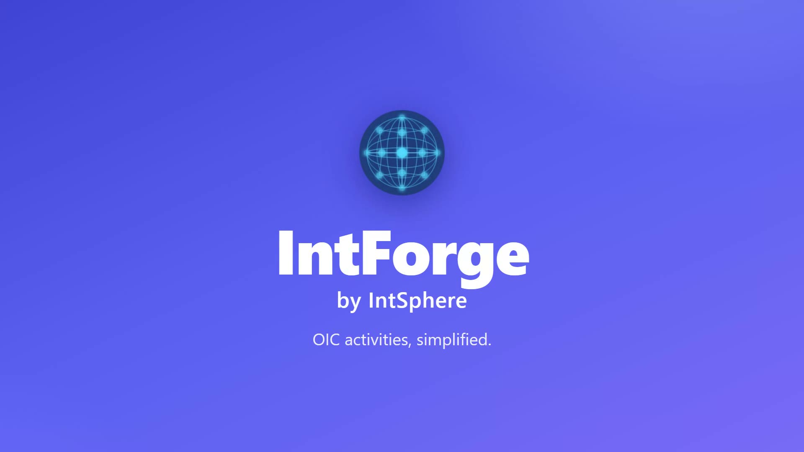
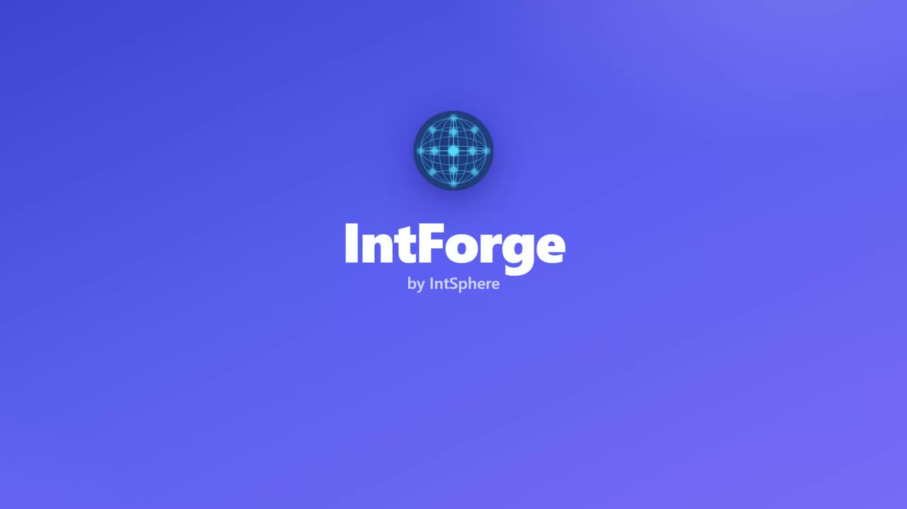

Vision and AI
What IntForge is building, the problems it solves for OIC teams, and how AI helps with errors, version differences, design documents and analysis.
More IntForge videos

4:07IntForge overview
The full tour: monitoring, scheduling, design, error analysis, documents, AI, and Fusion and IDCS checks.
13:31
Part 1: Monitor, schedule and design
Monitor runs and errors, scheduled integrations, audit records, mapping, and the Fusion and IDCS tools.

13:18Part 2: Build, operate and extend
Call Graph, compare versions, TDDs and release notes, Swagger, flow diagrams and bulk operations.
See IntForge on your own OIC instance.
Book a personalised demo, or write to connect@intsphere.com.